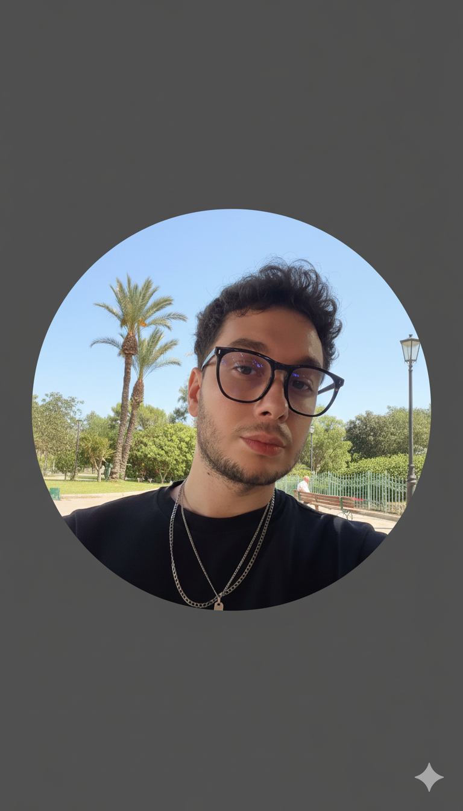

01 / THE PERSON BEHIND THE PIXELS
About me
I'm a Computer Programming student building my software foundations and exploring the overlap between drawing, games and visual storytelling.
STUDENT / SOFTWARE FOUNDATIONS / INTERESTED IN GAME DEVELOPMENT

Biography
Hello, I’m Onur Can Orhan. I am a first-year Computer Programming student at Akdeniz University. I am learning Python and CSS to build a foundation in programming and web design. I want to reinforce what I learn through small practical exercises. My interests include drawing, video games and films. I am curious about the visual design, storytelling and technical structure of games. In the long term, I hope to combine my technical and visual interests by developing my own game projects.
LEARNING / 2026
My learning journey.
My current focus is strengthening class concepts through small practical exercises.
EDUCATION
Akdeniz University
Computer Programming · First year
CURRENT DIRECTION
What I am working towards
A learning plan, not a list of completed milestones.
- 01 ? LearnBuild programming and web foundations through coursework and practice.
- 02 ? MakeApply new ideas in small projects and document what I learn.
- 03 ? ExploreGradually investigate tools and techniques used in game development.
CLASS NOTES / CURRENT TERM
Weekly timetable
The schedule appears here when it has been updated in the content editor.
| Day | 09:00–10:50 | 11:00–12:50 | 14:00–15:50 |
|---|---|---|---|
| Monday | — | — | — |
| Tuesday | — | — | — |
| Wednesday | — | — | — |
| Thursday | — | — | — |
| Friday | — | — | — |
AREAS OF CURIOSITY
Interests
My interests
- Web design
- Digital illustration
- Technology
Learning priorities
- HTML5
- CSS3
- JavaScript
CURRENT LEARNING
Skills I am developing
HTML5Öğreniyorum
CSS3Öğreniyorum
JavaScriptKeşfediyorum
DesignKeşfediyorum